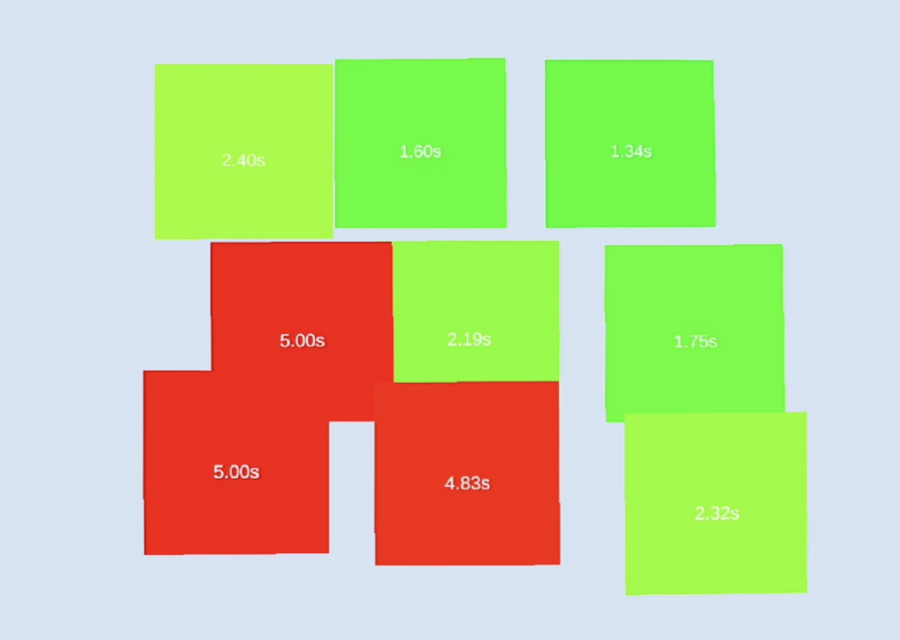

네오프리즘(NeoPrism) | 환자 기능평가 리포트
AR 기반 공간무시(Neglect) 기능평가(Functional Test) 및 재활 권고 소견서
환자 정보 및 검사 개요
본 리포트는 환자 수행 기반 데이터를 바탕으로 요약된 기능평가 결과입니다.
환자 기본정보
요약 판정(Preliminary Summary)
검사 결과, 좌측 하단부(Left-lower) 영역에서 반응 저하 및 탐색 편향이 확인되어 공간무시 소견이 의심됩니다. 해당 영역을 중심으로 한 재활 훈련이 권고됩니다.
기능평가 항목(Functional Tests)
각 항목은 짧은 안내 후 환자가 직접 수행하였으며, 수행 결과가 정량화됩니다.
TEST 01. 시각 탐색 타겟 확인(Visual Search)
여러 위치에 나타나는 타겟을 탐색·확인하여 공간 탐색 범위와 반응시간을 평가합니다.
TEST 02. 라인 중앙 정렬(Line Bisection)
선의 정중앙을 맞추는 과제로 중심 추정 편위(좌·우 편향)를 정량화합니다.
재활 콘텐츠(훈련 권고)
아래 콘텐츠는 검사 결과(좌측 하단부 반응 저하)에 근거하여 권고되는 훈련 항목입니다.
REHAB 01. 힌트 기반 타겟 유도(Hint-guided)
단계적 힌트로 시선을 좌측 하단부 방향으로 유도하여 주의 분배를 강화합니다.
REHAB 02. 라인 따라가기(Continuous Tracking)
연속 추적 과제로 탐색 연속성과 시각–운동 협응을 향상시키는 훈련입니다.
결과 요약(Heatmaps & Metrics)
히트맵은 환자의 실제 탐색/반응 분포를 시각화하며, 지표는 편향 정도를 수치로 요약합니다.
공간 분포 히트맵


정량 지표
임상 소견(Clinical Impression)
네오프리즘 기능평가 결과를 종합할 때, 본 환자(명현숙, 65세)는 좌측 하단부(Left-lower) 공간에서 탐색 및 반응이 상대적으로 감소하는 양상이 관찰되었습니다. 이는 일상 환경에서 좌측 하단 물체/장애물 인지 누락, 보행 시 좌측 하단 주의 저하 등으로 연결될 수 있어 공간무시(neglect) 관련 재활이 필요합니다.
1) 히트맵에서 좌측 하단부 영역의 반응 밀도 저하가 확인되며, 이는 시각 탐색의 공간 분포 불균형을 시사합니다.
2) RT Ratio(1.25) 상승은 좌측 타겟에 대한 반응 지연 가능성을 뒷받침합니다.
3) Line bisection 편위(EWB +0.18)는 중심 추정의 편향을 시사하며, 시선/주의의 우세 방향이 존재할 수 있습니다.
4) 종합적으로, 좌측 하단부에 대한 주의 결손이 핵심 문제로 판단되며, 해당 영역을 타깃으로 한 단계적 재활이 권고됩니다.
재활 권고(Recommendation)
본 권고는 본 검사에서 확인된 좌측 하단부 편향을 완화하는 목적의 일반적 가이드입니다.
권고 1) 좌측 하단 타겟 집중 훈련
REHAB 01을 통해 좌측 하단부에 반복 노출·유도(힌트 강도는 점진적 감소).
권고 2) 연속 추적 기반 주의 유지
REHAB 02로 좌측→하단으로 이어지는 경로를 포함하여 주의 유지/연속성 강화.
추적 평가(재검 권고)
동일 프로토콜로 주 1회 또는 2주 1회 재평가를 시행하여, 좌측 하단부 히트맵 밀도 및 RT Ratio/EWB 변화 추이를 확인하는 것을 권고합니다.